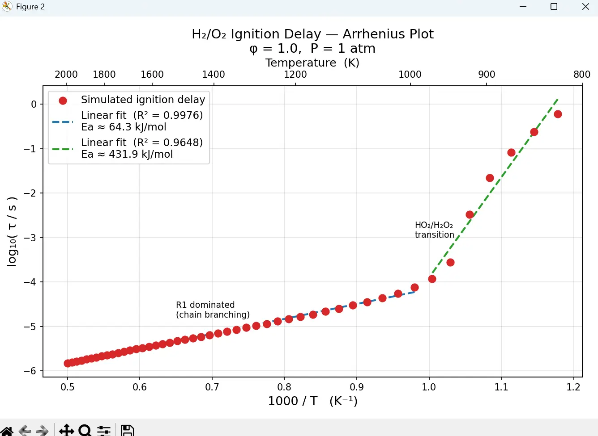
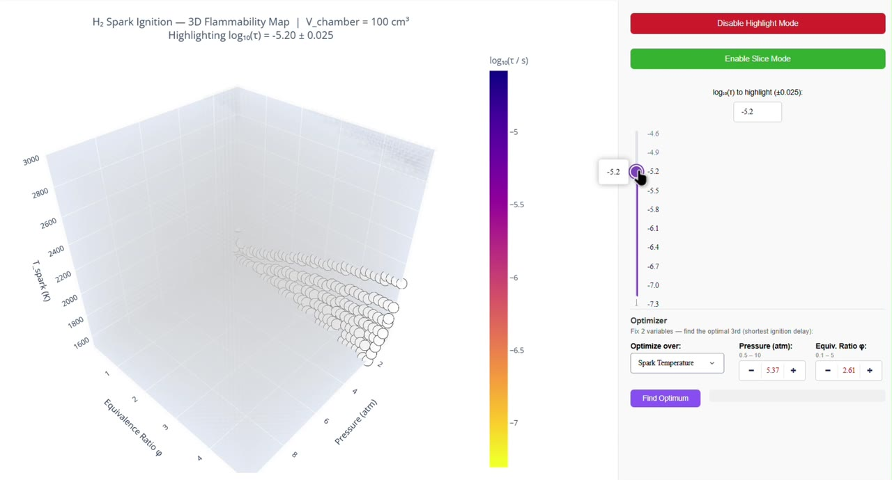

All projectsSheet 11 · Combustion · 2025
Hydrogen–oxygen ignition, from first principles
I wanted to understand what combustion software does under the hood, so I wrote the chemistry core myself. The result is a constant-volume kinetics simulator for hydrogen and oxygen, and 3D maps of where and how fast a spark-ignited mixture lights.
Elementary reactions, two with Troe falloff.
ODE evaluations behind the 3D map.
Lines of Python, from scratch.
Runtime for the full sweep.
01 — Why build it
Overall reaction, water as vapour. Simple on paper; nineteen elementary steps in practice.
The overall reaction looks simple. It isn’t.
I chose hydrogen because its overall reaction looked straightforward. The accepted kinetics are anything but. About nineteen elementary reactions compete. Free radicals (H, O, OH, HO2) are created, multiplied and destroyed by rival pathways, each pulled toward its own thermodynamic equilibrium. Ignition is the moment the radical-multiplying steps outrun the ones that remove radicals.
02 — The mechanism
Radicals multiplying, radicals removed
The 19 reactions fall into five jobs. Ignition is a race between chain branching, which grows the radical pool, and the steps that capture or recombine radicals. Pick a species to see every reaction it takes part in.
Chain branching
One radical in, more out. These steps let the radical pool grow exponentially.
- R1H + O₂ ⇌ O + OHdominant at high T
- R2O + H₂ ⇌ H + OH
- R4O + H₂O ⇌ 2OH
Propagation
Keeps the radical count and releases most of the heat.
- R3H₂ + OH ⇌ H₂O + Hmain heat release
HO₂ formation & consumption
Three-body capture of H competes directly with R1.
- R9H + O₂ (+M) ⇌ HO₂ (+M)Troe falloff · competes with R1
- R10HO₂ + H ⇌ H₂ + O₂
- R11HO₂ + H ⇌ 2OH
- R12HO₂ + O ⇌ O₂ + OH
- R13HO₂ + OH ⇌ H₂O + O₂
H₂O₂ chemistry
A slow route back to OH that matters at lower temperatures.
- R142HO₂ ⇌ H₂O₂ + O₂
- R15H₂O₂ (+M) ⇌ 2OH (+M)Troe falloff
- R16H₂O₂ + H ⇌ H₂O + OH
- R17H₂O₂ + H ⇌ HO₂ + H₂
- R18H₂O₂ + O ⇌ OH + HO₂
- R19H₂O₂ + OH ⇌ HO₂ + H₂O
Dissociation & recombination
Third-body steps that create or remove radicals in pairs.
- R5H₂ + M ⇌ 2H + M
- R62O + M ⇌ O₂ + M
- R7O + H + M ⇌ OH + M
- R8H + OH + M ⇌ H₂O + M
The standard 19-reaction H₂/O₂ set used by published mechanisms of this size, numbered as in that set; rate parameters come from the published mechanism. M is any third body that carries away energy.
03 — The model
Species, temperature and a stiff solver
Radical chemistry runs on timescales many orders of magnitude apart, so explicit integrators fail or crawl. Every species concentration and the temperature are solved together as one stiff system.
- Formulation
- Constant volume (Vchamber = 100 cm³) · zero-dimensional, homogeneous
- Unknowns
- Every species concentration and the temperature, coupled through the reaction rates and an energy balance
- Kinetics
- 19 elementary reactions · pressure-dependent rates with Troe falloff
- Thermodynamics
- NASA polynomials for temperature-dependent heat capacities and enthalpies
- Integration
- SciPy
solve_ivpwith the BDF method - Mixture
- Hydrogen and oxygen only
Governing relations
Species balance at constant volume: each concentration changes by the net rate of every reaction i that produces or consumes it.
Rate of progress of reaction i: forward minus reverse, by the law of mass action.
Modified Arrhenius rate constant for each step.
Troe falloff for the pressure-dependent steps (R9, R15): F broadens the transition between the low- and high-pressure limits.
NASA polynomials give heat capacity, and from it enthalpy, as functions of temperature.
04 — Results
Watching ignition happen
One run at a time, radicals build through an induction period before heat release takes over. Across thousands of runs, a map emerges of where a spark-ignited mixture lights and how fast.


The slope of ln τ against 1/T gives the apparent activation energy of each regime.
Equivalence ratio: φ = 1 is stoichiometric, φ < 1 lean, φ > 1 rich. The maps sweep φ from 0.1 to 5.
Fig. 11.5 — Interactive 3D map
64,000+ ignition delays in one volume
Drag to rotate and hover for values. Highlight mode isolates one ignition-delay band and outlines its boundary. Slice mode cuts a plane through any axis, with contour lines. The optimizer fixes two variables and finds the third that gives the shortest delay. This is my Dash app’s figure logic running in the browser on the precomputed grid.

Optimizer
Fix two variables and find the optimal third (shortest ignition delay).
05 — Limits
This model: zero-dimensional, chemistry only.
Reacting-flow CFD adds convection and diffusion of every species, plus momentum and energy transport.
What a zero-dimensional model can’t tell you
There is no transport: no heat or mass diffusion, no flame propagation, no flame-stability conditions. Those need the partial differential equations on the left, which is the jump to real CFD, and the ODE case alone took 2,000+ lines and about eight hours of runtime. Real chambers also add other gases as third bodies, catalysts such as platinum that open new pathways, and additives such as NH3 that change hydrogen’s behavior.
The model has not been validated against an engine or experimental ignition data. What it gives me is a working understanding of why hydrogen ignition is so sensitive to initial conditions.
A dry-cell electrolyzer for oxyhydrogen
A miniature dry-cell electrolysis system to produce oxyhydrogen for a small motorcycle engine. Once it runs, the simulator becomes a tool for choosing operating conditions, valve timing and, subject to laboratory approval, catalyst materials.
- Initial CAD designDone
- Component selectionDone
- Several components purchasedDone
- System integrationEarly stage
- Assembly and testingNot started